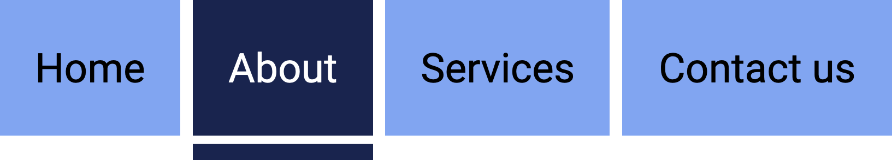

An accessible menu
The menu below shows "About us" as the current section, clearly indicated through colour and styling. This is obvious to a sighted user.

But what about assistive technology users? They hear a list of links, all announced the same way. Nothing in the page structure tells them "this is the section you're in."
<nav aria-label="Example navigation">
<ul>
<li><a href="#">Home</a></li>
<li><a href="#">About</a></li>
<li><a href="#">Contact</a></li>
</ul>
</nav>aria-current fills this gap. It marks an element as the current one within a set and lets assistive technology announce that information.
It takes one of seven values.
page
aria-current="page" identifies the current page within a set of pages.
In the example below, Home is identified as the current page in the navigation.
<nav aria-label="Example navigation">
<ul>
<li><a href="#" aria-current="page">Home</a></li>
<li><a href="#">About</a></li>
<li><a href="#">Contact</a></li>
</ul>
</nav>step
aria-current="step" identifies the current step within a process.
In the example below, Cart is identified as the current step in the checkout process.
<ol aria-label="Checkout steps">
<li aria-current="step">1. Cart</li>
<li>2. Delivery</li>
<li>3. Payment</li>
<li>4. Confirmation</li>
</ol>location
aria-current="location" identifies the current location within a set of locations.
In the example below, Dinosaurs is identified as the visitor's current location in the museum.
<ul class="museum-list" aria-label="Museum floor plan">
<li>Entrance</li>
<li>Ancient Egypt</li>
<li aria-current="location">Dinosaurs</li>
<li>Space exploration</li>
<li>Gift shop</li>
</ul>date
aria-current="date" identifies the current date within a set of dates.
In the example below, 5 March is identified as the current date in the calendar.
<table>
<caption>March 2026</caption>
<thead>
<tr>
<th>Su</th>
<th>Mo</th>
<th>Tu</th>
<th>We</th>
<th>Th</th>
<th>Fr</th>
<th>Sa</th>
</tr>
</thead>
<tbody>
<tr>
<td>1</td>
<td>2</td>
<td>3</td>
<td>4</td>
<td aria-current="date">5</td>
<td>6</td>
<td>7</td>
</tr>
</tbody>
</table>time
aria-current="time" identifies the current time within a set of times.
In the example below, the 10:30am Client call is identified as the current item in the schedule.
<ol aria-label="Today's schedule">
<li>9:00am, Team standup</li>
<li aria-current="time">10:30am, Client call</li>
<li>1:00pm, Lunch</li>
<li>2:30pm, Design review</li>
</ol>true
aria-current="true" identifies an item as current when none of the more specific values are appropriate.
In the example below, Accessibility is identified as the current category.
<div role="group" aria-label="Filter by category">
<ul class="filter-tabs">
<li><button type="button">All</button></li>
<li><button type="button" aria-current="true">Accessibility</button></li>
<li><button type="button">Development</button></li>
<li><button type="button">Design</button></li>
</ul>
</div>false
aria-current="false" explicitly marks an item as not current. This is the default value, so it rarely needs to be stated, but it can be useful when toggling state via JavaScript, setting it explicitly on the previously-current item as current moves to a new one.
In the example below, 1 has just lost current status as 2 becomes current.
<nav aria-label="Pagination">
<a href="#" aria-current="false">1</a>
<a href="#" aria-current="page">2</a>
<a href="#">3</a>
</nav>Picking the specific value over true matters. aria-current="page" on a nav link and aria-current="true" on the same link aren't guaranteed to be announced the same way, and the specific value carries more meaning for the user.
Where to use it
aria-current is a global attribute, so technically it can be added to any element. In practice it's mostly seen on a, li, button, and table cells inside calendar markup. Some specific examples:
- Navigation menus, marking the current page (
aria-current="page") - Museum floor plans, wayfinding, or similar sequences, marking the current location (
aria-current="location") - Multi-step forms or wizards, marking the current step (
aria-current="step") - Calendars and date pickers, marking the current date (
aria-current="date")
The common thread: somewhere a sighted user gets a visual "you are here" signal that isn't otherwise available from the accessible name or role.
Where to avoid it
aria-current is not a substitute for aria-selected or aria-checked. Current, selected and checked are three different states with three different meanings, don't reach for aria-current just because something happens to be selected.
It's also not something to set once and forget. In some cases, it may need to dynamically change in the DOM as users interact with the page.
Takeaway
Use aria-current to give AT users the same "you are here" context that sighted users get through styling.